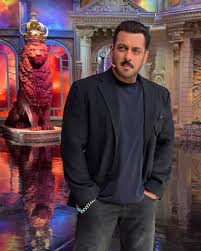
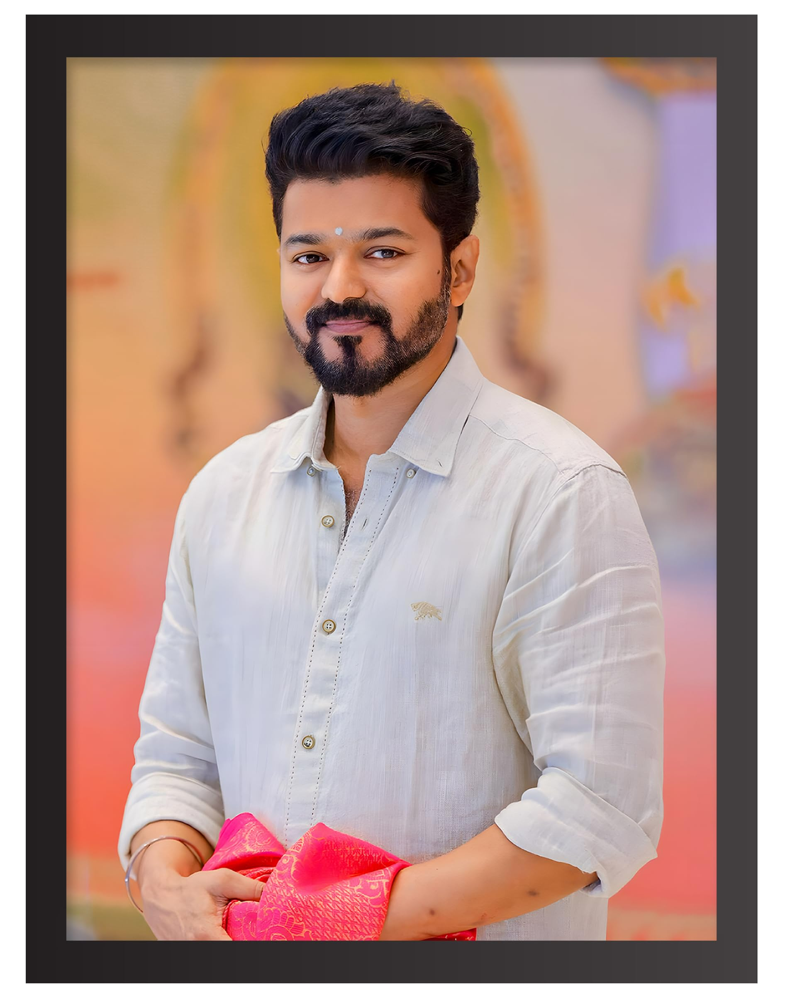
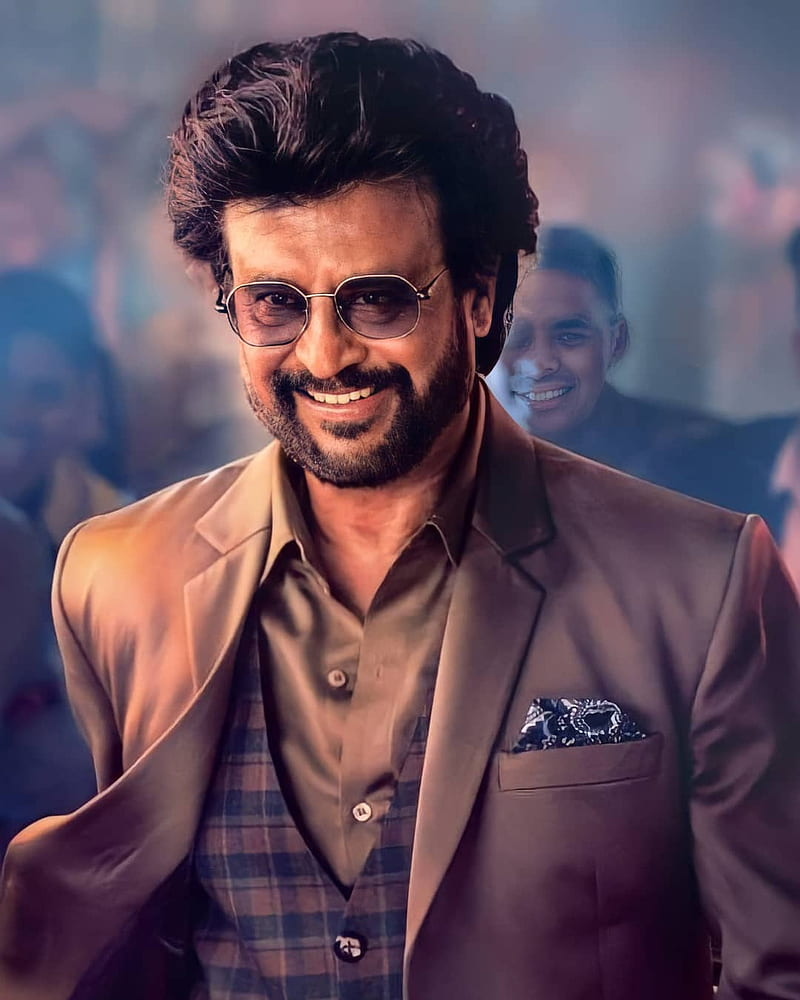
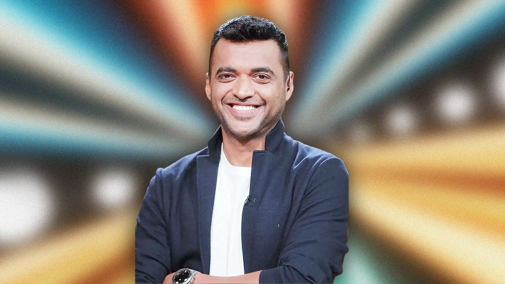
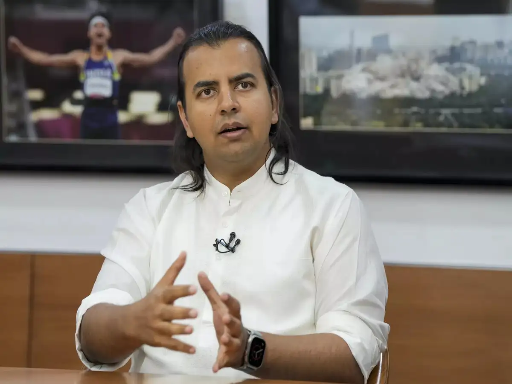
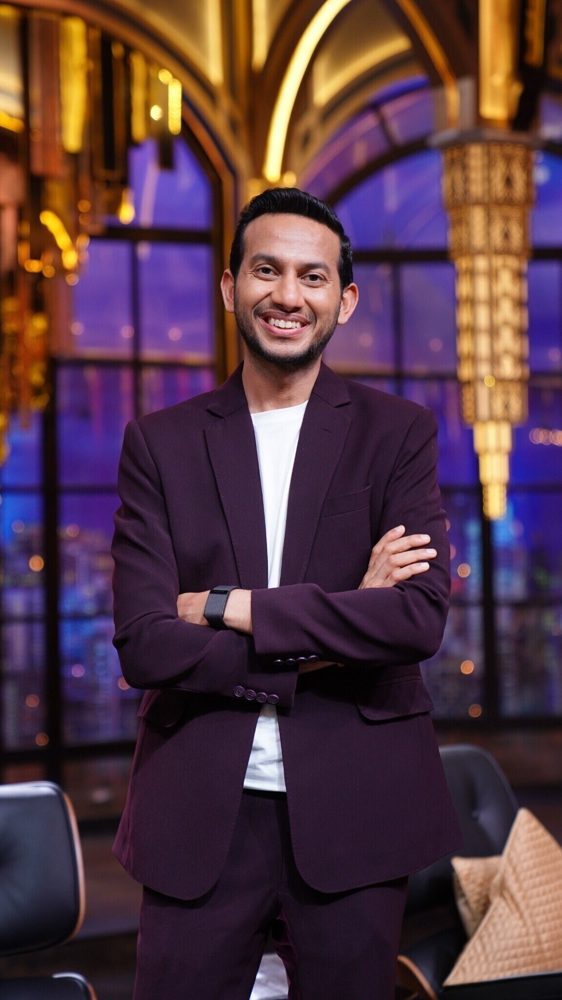

Business
In Business, hardwork alone cannot make you bigger or richer, because there are approx 7 billions people around the world.
Successfull people have a different mindset of not giving up, creating ideas which solves consumer's problem.
- Elon Musk

Elon Musk's is very sharp focussed man, he knows how to convert ideas into reality. there are some traits that you can copy if you want to become next elon-musk are like fast execution, not giving up, working on new space which no-one touch means getting the first mover advantage, consistency, bigger ideas, having the confidence that i can do it.
- Jeff Bezos

Jeff Bezos is a man of taking action and see results. he fails in hundreds of startups but he only follow one thing. "It's normal to fail in hundreds of things atleast you try to solve a problem or try to create a new thing for world. and at last you'll make billions from just one thing, in my case its Amazon."
-
Evan Spiegel - Snapchat

Evan Spiegel is a perfect example of how a boy work hard and party harder. yes this an lives life king size, from enjoying with friends to harassing juniors, he do it all. but also he worked with full focus on his ideas on stanford university. if you want to make billions then you have to focus on new things and inventions which he learned in stanford university.
-
Brian acton

Brian Action, in his early career days, he tried for many software engineers roles in big tech companies, and also worked in some of these, but when he tried to get a job at facebook he got rejected. then he decided he also make a big social media company, and later he make Whatsapp, that was acquired by facebook for $19 billion.
-
Pavel Durov

Pavel Durov is highly successful as the billionaire founder of Telegram, a globally popular, privacy-focused messaging app with over a billion users, known for its lean operations, focus on user freedom, and distinctive minimalist lifestyle emphasizing discipline, physical health, and digital detox, making him a major tech figure known for challenging norms and prioritizing independence. He previously founded Russia's VKontakte (VK) social network before focusing on Telegram, establishing a reputation for tech innovation and commitment to privacy against government pressure
-
Reid Hoffan

Reid Hoffman is exceptionally successful, known for co-founding LinkedIn, pioneering early social networks (SocialNet), being a key part of the "PayPal Mafia," and becoming a top-tier venture capitalist at Greylock Partners, backing giants like Airbnb and Facebook, all while authoring bestsellers and shaping tech through his focus on network effects and AI. His success stems from early tech involvement, strategic early investing (Uber, Airbnb), and profound influence on networking and AI ethics.
-
Alexander Wang - Scale AI

Scale AI was co-founded by Alexandr Wang, who dropped out of MIT at 19 to build the company, becoming a prominent figure and one of the youngest self-made billionaires in AI by providing crucial labeled data for machine learning models for giants like NVIDIA and Meta. He's known for his early success, focus on AI infrastructure, and recent involvement with Meta's AI initiatives
-
Lucy Guo

Lucy Guo's success story is a tale of early hustle, unconventional choices like dropping out of Carnegie Mellon for the Thiel Fellowship, and becoming a self-made billionaire through co-founding Scale AI, an AI data-labeling firm, and later launching the creator platform Passes and Backend Capital venture fund. At 30, she became the youngest self-made woman billionaire, driven by a childhood of selling Pokémon cards and online assets, demonstrating that building a tech empire can stem from disciplined, risk-taking, and relentless pursuit of innovation in AI and the creator economy.
Bollywood
Bollywood's success is defined by massive box office hits, iconic stars like the "Three Khans" (Shah Rukh, Salman, Aamir) and Amitabh Bachchan, and massive global reach, with films like Dangal and Baahubali 2 dominating records, while actors like Akshay Kumar and Hrithik Roshan also consistently deliver blockbusters and high earnings. The industry thrives on huge domestic audiences, making Indian cinema a powerhouse, with recent trends showing high-grossing films like Jawan and Animal setting new first-week records.
- Shahrukh Khan

Shah Rukh Khan's success story is a classic rags-to-riches tale, rising from humble Delhi roots with no connections to become Bollywood's "King Khan" through sheer determination, hard work, and risk-taking, transitioning from TV to iconic romantic lead roles, embracing villainous parts to break norms, and building a business empire, all while inspiring with his resilient attitude and strong work ethic
- Salman Khan

Salman Khan's success story in Bollywood is a journey from background roles to superstardom, marked by early struggles, a breakout hit with Maine Pyar Kiya (1989), a shift to action icons in the 2010s with films like Dabangg, and becoming a major force with blockbuster hits, philanthropic work via Being Human, and hosting Bigg Boss, solidifying his status as an enduring, mass-appealing superstar.
- Vijay Thalapathy

Vijay's success story is a tale of perseverance and reinvention, transforming from an actor with a string of initial box office failures into one of the highest-paid and most influential superstars in Indian cinema, a feat achieved through a consistent run of blockbusters and a massive, loyal fan base
- RajniKanth

Rajinikanth's success story is an inspiring rags-to-riches journey from a humble bus conductor to an Indian cinematic superstar, built on sheer determination, unique charisma, and iconic style (like his signature cigarette flip) that captivated audiences across India and beyond, earning him titles like "Thalaivar" and making him a cultural phenomenon, from early villain roles to blockbuster hits
- Amitabh Bachan

Amitabh Bachchan's success story is a testament to resilience, marked by initial rejections, a career-defining breakthrough, financial struggles, and a major comeback. After facing numerous rejections, he broke through with the film Zanjeer and became a superstar with roles like the "angry young man". He later faced near bankruptcy from his company, but a comeback began with his hosting role in Kaun Banega Crorepati and taking on new film and television
Hollywood
Hollywood success stories often involve overcoming adversity, relentless work, strategic networking, and often a mix of talent and luck, exemplified by figures like Leonardo DiCaprio (tough start, big dreams), Samuel L. Jackson (highest-grossing actor), and pioneers like Walt Disney, showing transformation from struggle (Disney's early failures) to global iconic status through vision and persistence.
- Tom Cruise

Tom Cruise's success story is one of relentless drive, versatility, and dedication to his craft, rising from early struggles with dyslexia and frequent moves to become a global superstar through iconic roles in Risky Business and Top Gun, earning critical acclaim in dramas like Born on the Fourth of July & Jerry Maguire, and cementing his action legacy with the Mission: Impossible franchise, all while known for performing his own dangerous stunts and maintaining box office power for decades
-
Dwayne Johnson

Dwayne "The Rock" Johnson's success stems from an incredible blend of charisma, relentless work ethic, strategic career pivots from WWE superstar to global movie icon, and sharp business acumen, building empires in film, spirits (Teremana), apparel (Project Rock), and sports, all while maintaining an authentic connection with fans through social media and a positive, disciplined mindset. He turned early financial struggles into multi-billion dollar ventures, becoming one of the world's highest-paid entertainers by leveraging his personal brand and understanding consumer connection
-
Brad Pitt

Brad Pitt's success story is one of perseverance from humble beginnings, starting with odd jobs (even a chicken suit!) in L.A. before his breakout role in Thelma & Louise (1991) launched him to stardom, leading to iconic roles in films like Fight Club, Ocean's Eleven, and Once Upon a Time in Hollywood, for which he won an Oscar, evolving from heartthrob to respected actor and producer with his company Plan B Entertainment, behind Oscar-winning films like 12 Years a Slave
-
Jackie Chan

Jackie Chan's success story is one of perseverance from poverty, rigorous training in Peking Opera and martial arts, early struggles as a child actor and stuntman, achieving stardom in Hong Kong with unique comedic action, and eventually conquering Hollywood by creating his own distinctive, dangerous, and humorous stunt-filled style, becoming a global icon known for his work ethic and dedication
- leonardo dicaprio

Leonardo DiCaprio's success story is one of early promise, breakthrough roles, global superstardom via Titanic, and a career-long commitment to challenging, diverse films, marked by critical acclaim, numerous Oscar nominations, and finally winning Best Actor for The Revenant, solidifying his status as a leading Hollywood talent. From child actor struggles and intense rejection to becoming a cultural icon and respected actor, his journey highlights resilience, choice, and passion for cinema
Indian Business
Stories of successful businessmen in India highlight diverse journeys, from tech entrepreneurs like Vijay Shekhar Sharma (Paytm), who started with a mobile recharge platform, to e-commerce founders like Sachin and Binny Bansal (Flipkart), who sold their company to Walmart for $16 billion. Other examples include Falguni Nayar (Nykaa), a former banker who built a beauty e-commerce giant, and Ritesh Agarwal (OYO Rooms), who disrupted the budget hospitality industry by starting his company at age 19
-
Deepinder Goyal

Deepinder Goyal's success story is about identifying a real-world problem—ordering food was hard—while working at Bain & Company, leading him to co-found Foodiebay in 2008, later renamed Zomato, revolutionizing online food discovery, ordering, and delivery through perseverance, data-driven decisions, and building strong systems, transforming a small idea into a global food tech giant and a billion-dollar brand
-
Nikhil Kamath

Nikhil Kamath's success story is about a school dropout who built India's largest stockbroker, Zerodha, by disrupting finance with low-cost, tech-driven platforms, becoming a self-made billionaire through discipline, risk-taking, and self-learning in trading, starting from a call center job and eventually co-founding ventures like Gruhas (VC) and True Beacon (Asset Management). His journey highlights defying traditional education for practical market mastery, impacting millions by making investing accessible, and now inspiring others through podcasts and philanthropy
-
Bhavish Aggarwal

Bhavish Aggarwal's success story is about transforming India's mobility with Ola, starting from a personal bad cab experience in 2010 to building a massive ride-hailing platform by deeply understanding local needs (cash payments, autos, smaller cities) and aggressively competing with Uber, then expanding into electric vehicles (Ola Electric) and AI (Krutrim), showcasing bold vision, rapid execution, and a focus on Indian innovation, making him a key figure in India's tech startup ecosystem
-
Ritesh Agarwal

Ritesh Agarwal's success story is about transforming budget travel in India by founding OYO Rooms, starting from his early coding interests and modest Odisha background, dropping out of college to pursue his vision, getting recognized by the Thiel Fellowship (a prestigious $100k grant), and scaling OYO from a small portal (Oravel Stays) into a global hospitality giant, making him a self-made billionaire known for innovation and disruption.
-
Binny Bansal
Binny Bansal's success story is about co-founding Flipkart, India's e-commerce giant, with Sachin Bansal in 2007, transforming a small online bookstore into a massive online retailer that challenged global players like Amazon, leveraging innovations like Cash on Delivery (COD) and ultimately leading to a massive Walmart acquisition, solidifying his status as an e-commerce pioneer and active investor in new ventures like PhonePe
Sports
Sports success stories often feature overcoming immense odds, like Wilma Rudolph conquering childhood polio to become an Olympic track star, or Bethany Hamilton returning to pro surfing after losing an arm in a shark attack, proving resilience and determination trump adversity. Other inspiring tales involve humble beginnings, such as India's MS Dhoni rising from a railway ticket collector to cricket captain, or Geeta Phogat breaking barriers in wrestling from a patriarchal village to global medals, showing passion and grit can transform lives.
-
Michael Jordan

Michael Jordan's story is about unparalleled athletic dominance, fierce competitiveness, and global icon status, rising from being cut in high school to winning six NBA titles with the Chicago Bulls, inspiring millions, revolutionizing basketball, and building a massive business empire (Air Jordan), all fueled by an intense drive to overcome failure and achieve perfection. His career, marked by incredible dunks, game-winners, and a legendary "killer instinct," solidified him as arguably the greatest basketball player ever
-
Tiger Woods
Tiger Woods' story is one of unparalleled golfing dominance, breaking barriers as a mixed-race prodigy, achieving legendary status with numerous major wins (including 15 majors, second only to Jack Nicklaus), transforming the sport's appeal and finances, and overcoming immense personal challenges (scandals, injuries, public struggles) to make epic comebacks, most notably his 2019 Masters win, solidifying him as a global icon and one of golf's all-time greats
-
Cristiano Ronaldo

Cristiano Ronaldo's success story is a classic "zero to hero" tale of immense talent meeting relentless hard work, starting from poverty in Madeira, Portugal, overcoming heart surgery as a teen, and rising through Sporting CP to become a global football icon at Manchester United, Real Madrid, Juventus, and Al-Nassr, earning multiple Ballon d'Ors, Champions League titles, and leading Portugal to Euro 2016 glory, all built on unparalleled dedication, physical fitness, and goal-scoring prowess
-
lebron james

LeBron James' success story is a journey from challenging beginnings in Akron, Ohio, to becoming a global icon, marked by unparalleled NBA dominance, four championships with three teams, becoming the NBA's all-time leading scorer, immense business success (becoming the first active player billionaire), and significant philanthropic work through the I PROMISE School. His rise began as a high school phenom, earning him the #1 draft pick in 2003, and was fueled by relentless work ethic, strategic career moves (like joining Miami, returning to Cleveland, and winning titles with the Lakers), and a commitment to community empowerment, solidifying his legacy as one of basketball's greatest.
-
Roger Federer

Roger Federer's success story is one of exceptional talent, relentless hard work, and remarkable mental fortitude, transforming from a fiery junior to a graceful "Maestro" of tennis, winning 20 Grand Slams and becoming a billionaire through smart business ventures and endorsements, all while embodying sportsmanship and impacting the game globally. His journey highlights dedication, learning from losses, mastering self-control, and building a powerful brand beyond the court, solidifying his legacy as an icon
Successful People Mindset
Successful people share mindsets focused on growth, action, and resilience, believing skills are developed through effort (growth mindset), setting clear goals, taking calculated risks, learning from failures as opportunities, and consistently taking purposeful action, while maintaining self-belief, responsibility, and a focus on solutions rather than complaints. They prioritize continuous learning, problem-solving, integrity, and self-care, seeing challenges as meaningful.